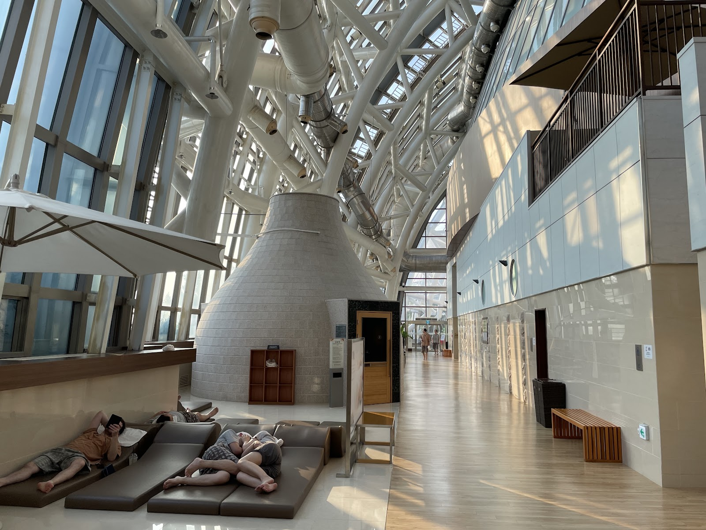

SPA LAND Centum City: A Relaxing Korean Spa Break in Busan
At a glance
- What it is: A large Korean spa and sauna inside Shinsegae Centum City.
- Where: 35 Centum nam-daero, Haeundae, Busan.
- Best for: Visitors looking to slow down between shopping, sightseeing, or beach days.
- Google rating: 4.4/5 from 5,191 reviews at the time of writing.
Busan is a city of beaches, busy shopping districts, and long days on foot. SPA LAND Centum City offers a different kind of stop: time to soak, warm up, and unwind indoors. Located in the Shinsegae Centum City complex, it is a convenient option for travelers who want to experience a Korean spa without making a separate trip to a remote bathhouse.
In Korea, a jjimjilbang is more than a place to take a bath. It commonly combines bathing facilities with sauna rooms and shared spaces where guests can rest. SPA LAND is a polished, contemporary take on this kind of leisure experience. Whether you have a few hours between plans or want to make relaxation the main event, it can be a welcome change of pace.
What to expect at SPA LAND
The experience generally follows two different rhythms. The bathing area is for washing and soaking, while the shared areas are for relaxing in spa clothing. Bathing areas are separated by gender, and guests usually bathe without clothing there. If you have not visited a Korean bathhouse before, this may feel unfamiliar at first, but the routine is straightforward: leave your belongings in your locker, shower before entering the baths, and keep towels out of the water.
In the shared areas, you can take your time moving between sauna rooms and places to rest. The setting is designed for lingering rather than rushing through a single treatment. Bring a book, take a quiet break, or simply give yourself time to relax. If you are visiting with someone, agree on a meeting point and time in advance; the bathing areas are separate, and it is easy to lose track of time once you settle in.
Facilities, services, and access conditions can change, so check the official website before you go if you have a particular feature in mind. The same advice applies if you are traveling with children or have questions about accessibility, tattoos, or other entry policies.
Why it works well for travelers
SPA LAND is a practical choice when you want a restorative break without planning a full-day excursion. Its location in Centum City makes it easy to pair with shopping or other activities in the surrounding district. It can also be a useful indoor option when the weather is uncomfortable, though it is best treated as a destination in its own right rather than a quick stop between tightly scheduled sightseeing plans.
For first-time visitors to Korea, a jjimjilbang offers a glimpse of a popular local way to relax. You do not need to know a long list of customs beforehand: follow posted instructions, keep the bathing and shared areas distinct, and observe how other guests use the space. A calm, considerate approach will help you feel more at ease.
Planning your visit
Check the official website for current opening information, admission details, and any notices that could affect your visit. These details are subject to change, and checking ahead is especially helpful if you have a fixed schedule. Allow enough time to change, shower, and explore at a comfortable pace rather than arriving just before you need to leave.
Wear or bring easy-to-remove clothing for changing, and pack only what you need. The facility’s locker and changing arrangements are part of the visit, but travelers should confirm what is provided and what they may want to bring directly with SPA LAND. If you have a health condition that could be affected by heat or hot-water bathing, consider your own needs and seek medical advice where appropriate.
SPA LAND has a Google rating of 4.4 based on 5,191 reviews, a useful snapshot of visitor feedback rather than a guarantee that every visit will be the same. Read recent reviews for current impressions, and use the map link below to confirm the location before setting out.
Good to know
- Address: 35 Centum nam-daero, Haeundae, Busan.
- Plan for a proper break: Changing, bathing, and relaxing take time; avoid squeezing the visit into a very short gap.
- Know the bathing-room custom: The gender-separated bathing areas are used without clothing. Shower before entering shared baths.
- Check details in advance: Confirm current hours, prices, entry rules, and available facilities on the official website.
- Use the map: Centum City is a large complex, so check the map and follow on-site signs once you arrive.
Useful links
FAQ
Do I need to bring a swimsuit?
The bathing areas use the customary Korean bathhouse format and are separate by gender; guests generally bathe without clothing. Shared areas are different, so check the facility’s current guidance for what is provided and worn there.
Can I visit if I have never been to a jjimjilbang?
Yes. Follow the posted instructions, shower before using the baths, and take your time. The bathing and shared areas have different customs, but staff signage can help you understand the basics.
Should I check anything before going?
Yes. Use the official website to confirm current hours, admission details, facilities, and entry policies before you travel.